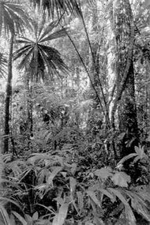

|
 | |
Pulmones verdes fritos
Deforestación del Amazonas
A
partir de primitivas teorías animistas o de metáforas un poco más elaboradas,
la idea de la Selva Amazónica como "pulmón verde del mundo" se encuentra instalada
fuertemente en el imaginario popular. Pero, ¿le cabe acaso la comparación con
un "pulmón"? No, para nada. En la nota que sigue, la verdadera función de las
selvas tropicales y el gran riesgo que implica perderlas.
El planeta
se está calentando y es una preocupación muy seria porque se vaticinan -sin mucho
margen de error- tremendas calamidades. También se conoce el motivo del aumento
de la temperatura: se debe a las altas emisiones de ciertos gases que se conocen
con el nombre de gases invernadero. Entre éstos, el de mayor presencia es el dióxido
de carbono (CO2, por su fórmula química). Las sociedades, sobre todo
las más industrializadas, lanzan sus efluvios de dióxido de carbono a la atmósfera
como producto de la combustión de hidocarburos, entre los que cuentan el petróleo,
el carbón, la madera. El 63 por ciento de toda la energía que consume la humanidad
proviene de combustiones de este tipo.
Estos gases, que preexisten a la
civilización, se llaman invernadero porque producen un fenómeno idéntico al de
los techos de vidrio en los invernaderos, que mantienen una temperatura agradable
aún en invierno. Tan es así que si no fuese por el CO2 y los otros
gases que producen ese efecto en la atmósfera, la temperatura promedio del planeta
sería de 18 gélidos grados centígrados bajo cero. Pero lo cierto es que a partir
de la revolución industrial los gases vienen aumentando y con ellos la temperatura;
y el paraíso terrenal puede llegar a convertirse en un sofocante infierno. Nuestros
nietos nos lo recriminarían.
Para evitar este bochorno, los gobiernos
de muchos países y un conjunto de organizaciones no gubernamentales se vienen
reuniendo y tratando de llegar a acuerdos y revertir este cruel destino. Pero.
Evidentemente, puede más el beneficio económico inmediato que la racionalidad
más elemental aplicada al bien de todos. Pero también abona nuestra desgracia
la falta de comprensión general de los problemas. Sin ir más lejos, abordemos
el tema de este artículo. Se sabe que los vegetales verdes, a través del proceso
de fotosíntesis, toman CO2 del aire y con éste fabrican su propio cuerpo
y su propio alimento. A este proceso se lo llama fijación de CO2 ya
que la molécula se captura del aire donde se mueve con libertad para dejarla atrapada
en la planta. Como subproducto de la operación se libera oxígeno (O2)
a la atmósfera, esa molécula tan sabrosa para la vida. Lo dicho hace que todo
el mundo vea a las grandes masas verdes como inmensos pulmones que oxigenan el
planeta, pero...
Toma y daca
Contra todas las apuestas, los
grandes bosques, las grandes selvas y cualquier otra cobertura verde ya establecida,
incluso las extensas coberturas planctónicas de los mares, no le quitan a la atmósfera
ni una gota de CO2 ni le agregan tampoco un gramo de oxígeno. ¿Pero
cómo? ¿Entonces tanto follaje para qué está, no fotosintetiza acaso? ¿No fija
CO2? Sí que lo hace, pero también respira, también vive, consume y
gasta, como cualquier otro organismo. Y el resultado neto, el saldo de la operación,
es cero. Todo lo que fija de dióxido de carbono durante las horas luminosas lo
devuelve al aire durante las 24 horas del día. Si así no fuera, si tan sólo hubiese
un pequeño saldo positivo a favor de la fijación de dióxido de carbono, la biomasa
crecería constantemente, cosa que sencillamente no ocurre.
Ahora, si
las selvas no inclinan la balanza gaseosa hacia la disminución del CO2,
¿qué beneficio le brindan al planeta. ¿Podemos talarlas sin remordimientos? ¡No!,
al contrario. Comprender esta cuestión hace más sólida la defensa de esos ecosistemas.
Aunque parezca un despropósito, casi un insulto, el principal beneficio es funcionar
como depósito de carbono. Madera, tallo, hoja, raíz, humus, materia orgánica...
pero sobre todo madera, no son otra cosa que dióxido de carbono fijado. Un depósito
seguro, bello, biodiverso y valioso. Si el carbono no esuviera allí, en esa selva,
en forma principalmente de árbol, entonces estaría libre en la atmósfera abonando
el efecto invernadero. No importa si la tala es para fines de carpintería, o papelería,
o combustible. Sea cual sea el destino inmediato, el mediato es la atmósfera,
y el calentamiento.
El segundo beneficio que nos brinda la selva es el
que aporta como regulador de temperatura y humedad. Sin su presencia, el clima
regional cambia conflictivamente. Aumentan las sequías y las inundaciones. La
desertificación avanza con su carga de muerte y las calamidades cruzan fronteras
sin tramitar visas.
Y hay muchos más beneficios que las grandes coberturas
verdes nos brindan, como la protección y fertilización del suelo, purificación
del aire y del agua, mantenimiento de la biodiversidad, reciclado y movimiento
de nutrientes, control de la gran mayoría de las plagas potenciales de la agricultura,
provisión de belleza estética y estímulo intelectual para el espíritu humano,
y muchos más. Igualmente, no sólo hay que preservar la naturaleza por sus beneficios,
fundamentalmente hay que preservarla para evitar los perjuicios que su destrucción
implica, entre ellos el calentamiento global.
A los efectos del calentamiento,
la imagen de mero depósito es menos brillante y romántica que la de un pulmón
viviente, pero la realidad es ésta y tal vez resulte la clave para la solución
del conflicto. Si la inercia capitalista salvaje quiero mi millón de dólares a
cualquier costa impide dejar de emitir CO2 a la atmósfera, tal vez
una buena organización y concientización logre secuestrar el gas liberado de otra
manera, y la más barata, es forestar, generar nuevos depósitos de CO2
fijado. Con todos los riesgos y cuidados que una forestación extensiva requiere,
será seguramente mejor que quedarnos fritos. | | |

| Mensaje
desesperado para el amigo Lula
Aprovechando
la amistad que nuestro presidente tiene con José Inacio Lula da Silva, presidente
del Brasil, hombre sensible si los hay y autoproclamado progresista, podríamos
transmitirle esta urgencia, que parece no haber advertido: Debe frenar inmediatamente
la deforestación de la selva, mediante una ley o un decreto, ya que los clareados
del bosque avanzan de modo alarmante y podrían tardar siglos en recuperarse, o
tal vez nunca lo logren. Esos bosques, señor presidente, pueden estar dentro de
sus fronteras, pero su existencia afecta a todo el planeta. Cada tala extensiva
produce un daño irreparable, que no vale el mísero impuesto que su país puede
percibir, y que el daño no lo pagan sólo los brasileros. O sea, Lula, o PT, o
Mercosur, o como quiera que usted se le llame, por favor, detenga inmediatamente
los desmontes. El planeta Tierra y sus millones de habitantes se lo van a agradecer.
| | |
A
reforestar
que se acaba el mundo
Qué
especie de árboles plantar no es una cuestión sencilla. Pero equivocarse en esta
respuesta es menos peligroso que equivocarse en dejar que el CO2 siga
aumentando. Lo ideal sería árboles frondosos y de crecimiento rápido, aunque siempre
serán preferibles las especies autóctonas. Los nuevos bosques no tienen por qué
parecerse a las forestas de producción, al contrario, pueden tener varias especies
y estar irregularmente espaciadas. Tal vez se genere una nueva especialidad en
forestaciones, la del bosque seminatural. El mejor destino de esta madera es perdurar
como madera. Un uso posible es la construcción de muebles o viviendas. También
los árboles adultos pueden sencillamente talarse y enterrarse. Sea como fuere,
la forestación organizada es capaz de revertir el inmenso error que la civilización
comete al emitir CO2 irresponsablemente con un costo incomparablemente
menor a reconvertir la industria (algo que de todas maneras habrá que ir haciendo). |
|
| |
| |
| | | | |
| | | |
Cálculo
de la cantidad de bosques necesarios para disminuir en un 25 por ciento el dióxido
de carbono atmosférico.
Lo
primero es calcular cuánto de CO2 hay que secuestrar para regresar
al promedio histórico del milenio. El volumen de la atmósfera (Va) es superficie
(la del planeta) por altura.
Va = 4 π R² x h (Con R = 6,4 x
106 m y h = 1,5 x 104 m)
Va = 7,7 x 1018 m3.
O sea casi 8 trillones
de metros cúbicos. De eso 360 partes por millón son CO2. Luego el volumen de CO2 (VCO2):
VCO2 = 2,8 x 1015 m3.
En cada metro cúbico de CO2 hay 45 moles de CO2, por lo tanto
tenemos en total de moles de CO2 en la atmósfera (nCO2)
nCO2 = 1,25 x 1017 moles.
Y cada mol pesa 44 gramos
de modo que hacemos un peso total de CO2 (PCO2) de
PCO2 = 5,5 x 1015 kg
De modo que el exceso de esto (PCO2exc), una cuarta parte, suma:
PCO2exc = 1,4 x 1015 kg
Ahora vamos a transformarlo en biomasa de bosque. A cada CO2 le sacamos un átomo de oxígeno y le metemos 2 de hidrógeno con lo cual reducimos
el peso en un 68 por ciento, llegamos a un peso en biomasa (Pbm) de:
Pbm = 1015 kg
El promedio de biomasa de un bosque cerrado puede rondar los 20 kg/m², de modo que para albergar nuestro peso de madera necesitamos un área de bosques nuevos (Aa):
Aa = 50 x 106 km²;
Eso es la tercera parte de la superficie de tierra firme y, claro, no es toda apta para bosques. |
| | | | |
Artículo
publicado en la revista EXACTAmente. Todos los derechos reservados.
Se permite su reproducción citando la fuente. Última actualización jun-06. Buenos Aires, Argentina. |
|